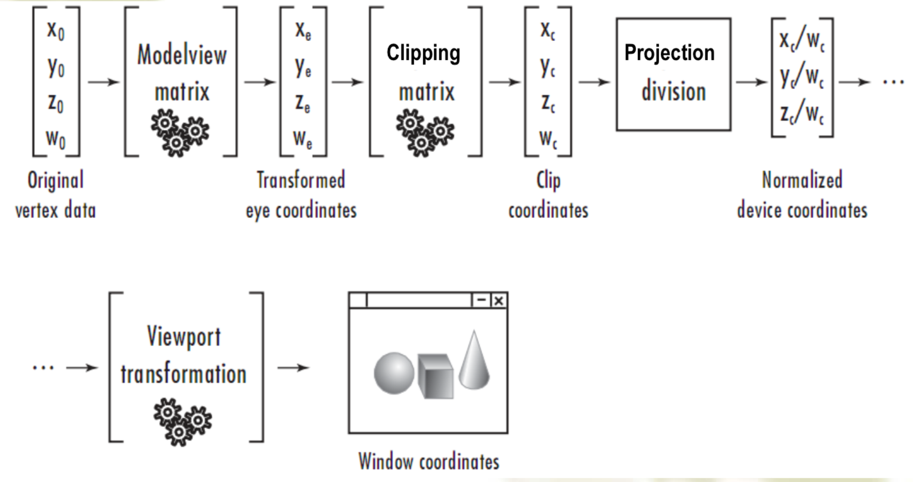

计算机图形学（四）Viewing 视见变换
1. Projection Transformation
Perspective 透视投影
视见体 view volume：四棱台
General Perspective Matrix
$h=z_{prp}-z$
$p_h=M_{pers}\cdot p$
$$
\begin{pmatrix}
x_h\y_h\z_h\h
\end{pmatrix}
=
\begin{bmatrix}
z_{prp}-z_{vp}&0&-x_{prp}&x_{prp}z_{vp}\
0&z_{prp}-z_{vp}&-y_{prp}&y_{prp}z_{vp}\
0&0&s_z&t_z\
0&0&-1&z_{prp}
\end{bmatrix}
\cdot
\begin{pmatrix}
x\y\z\1
\end{pmatrix}
$$- $s_z=-\frac{near+far}{near-far}$
- $t_z=\frac{2nearfar}{near-far}$
$$
\begin{pmatrix}
x_p\y_p\z_{vp}\1
\end{pmatrix}
=
\begin{pmatrix}
x_p\y_p\d\1
\end{pmatrix}
=
\begin{pmatrix}
x_h/h\y_h/h\d\1
\end{pmatrix}
$$
Perspective in View Volume
- perspective(fovy, aspect, near, far)
- $aspect=w/h$;
- $top=h/2=near*\tan(fovy/2)$;
- $right=w=aspect*h$
- Six planes of view volume
- $x=\pm \frac{right-left}{-2*near}$
- $y=\pm\frac{top-down}{-2*near}$
- $z_{min}=-near$
- $z_{max}=-far$
Perspective Normalization Matrix
- 错切变换
- $((left+right)/2, (top+bottom)/2,-near)$变到$(0,0,-near)$
- $H(\theta,\phi)=H(arccot\frac{left+right}{-2near},arccot(\frac{top+bottom}{-2near}))$
- scaling from view volume to normalization
- 变为 $x=\pm z$; $y=\pm z$
- $s_x=1/x=-2*near/(right-left)$
- $s_y=1/y=-2*near/(top-bottom)$
- $s_z=1$
- 投影规范化矩阵
- $N=\begin{bmatrix}1&0&0&0\0&1&0&0\0&0&\alpha&\beta\0&0&-1&0\end{bmatrix}$
$$
M_{persp}=NSH=
\begin{bmatrix}
\frac{2near}{right-left}&0&\frac{right+left}{right-left}&0\
0&\frac{2near}{top-bottom}&\frac{top+bottom}{top-bottom}&0\
0&0&-\frac{far+near}{far-near}&\frac{-2farnear}{far-near}\
0&0&-1&0
\end{bmatrix}
$$- 错切变换
Orthographic 正则投影
视见体：长方体
Orthographic Matrix
Orthographic in View Volume
- Ortho(left, right, bottom, top, near, far)
Orthographic Normalization Matrix
- 先移动到原点
- Scaling from view volume to normalization
- $s_x=1/x=2/(right-left)$
- $s_y=1/y=2/(top-bottom)$
- $s_z=1/z=2/(near-far)$
- So,
$$
\begin{align}
M_{ortho}&=ST\&=
\begin{bmatrix}
\frac{2}{right-left}&0&0&0\
0&\frac{2}{top-bottom}&0&0\
0&0&\frac{2}{far-near}&0\
0&0&0&1
\end{bmatrix}
\cdot
\begin{bmatrix}
1&0&0&-\frac{right+left}{2}\
0&1&0&-\frac{top+bottom}{2}\
0&0&1&-\frac{far+near}{2}\
0&0&0&1
\end{bmatrix}
\&=\begin{bmatrix}
\frac{2}{right-left}&0&0&-\frac{left+right}{right-left}\
0&\frac{2}{top-bottom}&0&-\frac{top+bottom}{top-bottom}\
0&0&-\frac{2}{far-near}&-\frac{far+near}{far-near}\
0&0&0&1
\end{bmatrix}\
\end{align}
$$
2. The Modelview Duality
Inverses Matrices（此部分查看03）
Viewing and Modeling transformations
- Viewing：
LookAt(eyex, eyey, eyez, atx, aty, atz, upx, upy, upz) - Modeling：
Translatef(tx, ty, tz)Rotatef(angle, x, y, z)Scalef(sx, sy, sz)
- Viewing：
Viewing Transformation
eye as origin;
view-plane normal $n$ as z-axis;
view-up vector (VUP) $v$ as y-axis;
x-axis: $u=v\times n$
LookAt(eye, at, up)codemat4 LookAt( const vec4& eye, const vec4& at, const vec4& up){ vec4 n = normalize(eye - at); vec4 u = normalize(cross(up,n)); vec4 v = normalize(cross(n,u)); vec4 t = vec4(0.0, 0.0, 0.0, 1.0); mat4 c = mat4(u, v, n, t); return c * Translate( -eye ); }
3. Definition of Viewport
- Viewport is a rectangular region in the window to which you can draw.
- Viewport Matrix
- $P’=T_2ST_1*P$
4. Sequence of OpenGL Transformation
- Sequence Picture

- Current Transformation Matrix CTM
- Conceptually there is a 4 x 4 homogeneous coordinate matrix, the current transformation matrix (CTM) that is part of the state and is applied to all vertices that pass down the pipeline
- The CTM is defined in the user program and loaded into a transformation unit
- Remember that last matrix specified in the program is the first applied
- CTM in OpenGL: Model-view & Projection
5. Shadows
shadow areas are:
- to be seen from the view position
- not to be seen from light source position
Shadows from a directional light
$$
\begin{pmatrix}
x’\y’\z’\w’
\end{pmatrix}
=
\begin{bmatrix}
b\times dy+c\times dz&-b\times dx&-c\times dx & -d\times dx\
-a\times dy& a\times dx+c\times dz&-c\times dy&-d\times dy\
-a\times dz& -b\times dz&a\times dx+b\times dy&-d\times dz\
0&0&0&a\times dx+b\times dy+c\times dz
\end{bmatrix}
\cdot
\begin{pmatrix}
x\y\z\1
\end{pmatrix}
$$shadows from a point light
$$
\begin{pmatrix}
x’\y’\z’\w’
\end{pmatrix}
=
\begin{bmatrix}
1&0&0&0\
0&1&0&0\
0&0&1&0\
\frac{a}{-d}&\frac{b}{-d}&\frac{c}{-d}&0
\end{bmatrix}
\begin{pmatrix}
x\y\z\1
\end{pmatrix}
$$